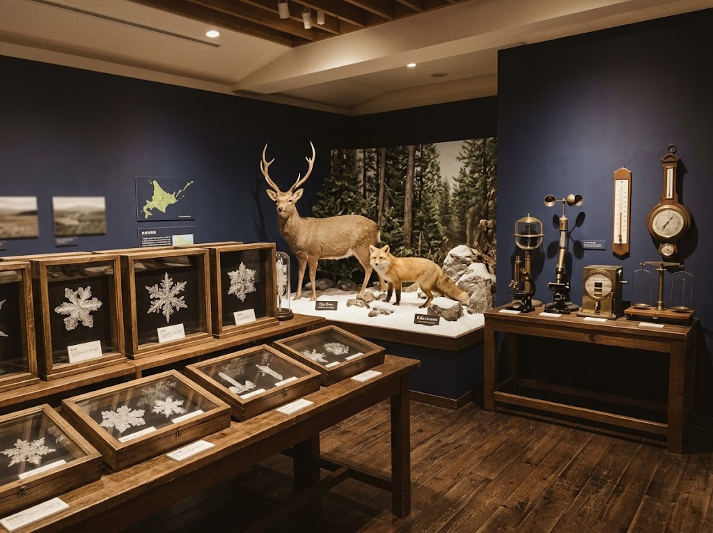
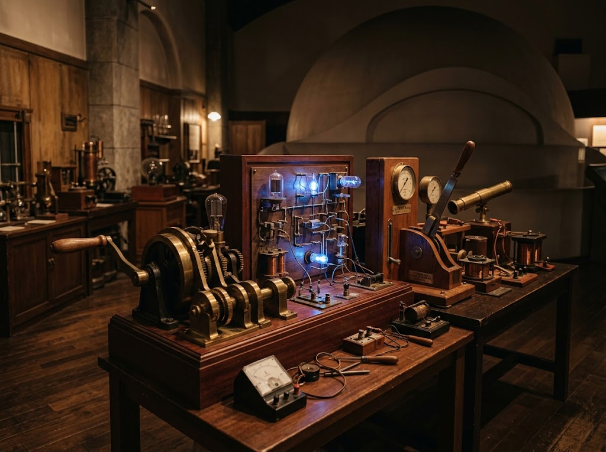

★★★★
日曜日の10時に５歳と３歳の子供達と遊びにいきました！10時40分からの子供向けプラネタリウムのプログラムも面白く、展示室も色々な科学の装置がたくさんあるのでとても楽しいです。今回は一時間ぐらいしか時間取れなかったですが、1～2時間遊ぶのにもぴったりの場所です！
直径18mのドームに170席。子ども向けのプログラムもあり、家族そろって星空を楽しめます。
北国の自然をテーマにした展示室。さまざまな科学の装置に、実際にふれて試せます。
科学ショーや工作体験などのイベントを定期的に開催しています。
サイパルは、市民と子どもたちが科学に親しみ、体験しながら学べる場を提供する目的でつくられました。
旭川市が設立・運営し、北海道最大級の科学館として、地域の科学教育の発展を図っています。
プラネタリウムに加え、定期的に科学ショーや工作体験などのイベントを開催しています。
開催内容は、お出かけ前に公式サイトでご確認ください。


日曜日の10時に５歳と３歳の子供達と遊びにいきました！10時40分からの子供向けプラネタリウムのプログラムも面白く、展示室も色々な科学の装置がたくさんあるのでとても楽しいです。今回は一時間ぐらいしか時間取れなかったですが、1～2時間遊ぶのにもぴったりの場所です！
常設展示も興味深い内容で、子どもも大人も楽しめる科学館でした。 スタッフの皆さんの接客が丁寧で初めて行っても安心できます。 特別展の特撮のDNAも良かったです。 クラフトでゴジラは丁寧にサポートしてくれて楽しかったです。 是非、自分だけのゴジラストラップを作ってみてください！